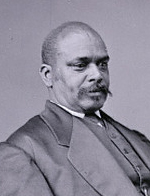

|

|

|
|
|
One of three blacks to serve as lieutenant governor of Louisiana, Oscar James Dunn was
born in New Orleans, the son of a free woman of color who operated a boarding
house. Her patrons taught him to read, write, and play the violin, and he worked
as a music teacher and as a barber before the Civil War. Dunn enlisted in the
Union army in the first unit of black soldiers raised in 1862. He rose to the
rank of captain but resigned in 1863 to protest the promotion of a white officer
to a rank he believed he deserved.
Dunn worked closely with the group around the New Orleans Tribune,
which toward the end of the Civil War demanded black suffrage. He was president
of the December 1864 mass meeting regarding suffrage in New Orleans, played a
prominent role in the January 1865 black suffrage convention, and was present at
the founding convention of the state Republican party in September 1865. He was
also active in the New Orleans Freedmen's Aid Association, established early in
1865 to assist former slaves in leasing plantations. Dunn also served as an
investigating agent for the Freedmen's Bureau and secretary of the advisory
committee to the Freedman's Savings Bank in New Orleans. In 1866, he established
an "intelligence office" (an employment agency), to find jobs for laborers with
"fair employers."
In 1867, Dunn was appointed by General Philip Sheridan to the New Orleans
Board of Aldermen, and then as president of the board of metropolitan police.
Siding with Henry C. Warmoth in the factional divisions in the Republican party,
Dunn was nominated and elected lieutenant governor in 1868, becoming the first
black in American history to hold that office. In 1871, he was chairman of the
Republican state committee. According to the census of 1870, he owned $11,000 in
real estate. A man of impeccable personal rectitude--he did not smoke, drink, or
gamble, and in 1870 he refused a $10,000 bribe in connection with a railroad aid
bill--Dunn by 1871 had become the head of a powerful faction within the Louisiana
Republican party. His sudden death in that year is sometimes attributed to
poisoning by his political foes.
Source: Eric Foner, Freedom's Lawmakers: A Directory of Black
Officeholders during Reconstruction (New York: Oxford University Press,
1993), 67-68.
|